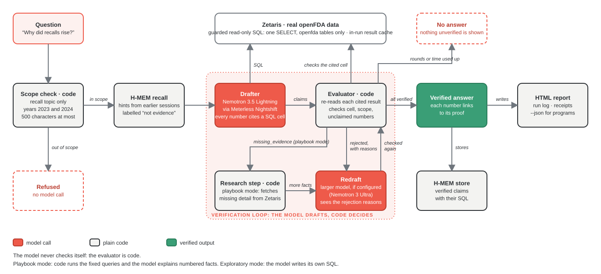

Device Recall Explainer
A recall is the FDA's signal that a device already in use may hurt people. Between January 2018 and June 2022, 13,623 medical devices were recalled in 5,035 recall events; in a review of 189 Class I recalls of moderate- and high-risk devices, 30 had at least one associated patient death (Mooghali et al., 2023; "associated with", not "caused by"). The hard part is knowing what a count means. In this data, cardiovascular recall records rose from 281 to 482 in a year, and one product code's 54 records were a single event from a single firm. This agent answers "why did this change?" and shows its work: every number links to the SQL result behind it, and an answer it cannot verify is never printed.
Replay of recorded runs. Nothing runs live on this page.
Pick a recorded run
How it works
